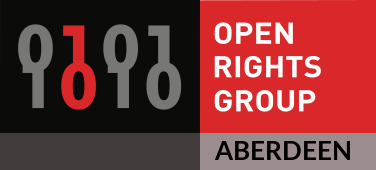

┃
┏━╸┏━┓╻ ╻┏━┓╺┳╸┏━┓┏┓╻┏━┓╻┏━┓┏━╸ .-`-. ┃1010100101
┃ ┣┳┛┗┳┛┣━┛ ┃ ┃ ┃┃┗┫┃ ┃┃┗━┓┣╸ .` `. ┃0101011010
┗━╸╹┗╸ ╹ ╹ ╹ ┗━┛╹ ╹┗━┛╹┗━┛┗━╸ _.-' '-┃1001101100
┃
Do average people really need this kind of security? Yes. They may be planning a political campaign, discussing taxes, or having an illicit affair. They may be designing a new product, discussing a marketing strategy, or planning a hostile business takeover. Or they may be living in a country that does not respect the rights of privacy of its citizens. They may be doing something that they feel shouldn't be illegal, but is. For whatever reason, the data and communications are personal, private, and no one else's business.
-- Bruce Schneier, Applied Cryptography - Second Edition
The Internet is an ubiquitous technology that allows people around the world to communicate, collaborate, gain and share knowledge. However, it can and is also used to collect data on individuals, their location, their habits and interests, often without them realizing it. This data can then be sold or shared without conscious consent, or, even worse, used unfairly against people in less than democratic regimes.
Here at Cryptonoise we are interested in how our privacy can be protected, and we like to discuss any news or relevant events that affect our digital rights. Come along to Cryptonoise if you are interested in either:
Cryptonoise meetups provide a great opportunity to learn about being safe online. If there's not a Cryptonoise meetup organised near you, you can organize one! Pick a time, place and frequency and send the details to the mailing list linked below to have your even added to the list.
Cryptonoise in-person meetups are currently suspended. This message was last updated on the 6th April 2020.
Online, you can find us in #openrightsgroup on irc.freenode.net. Come and say hi!
This is a list of resources you can use for better privacy when communicating online or surfing the web.
Tails is a live operating system that allows you to circumvent censorship, browse anonymously whilst leaving no trace on the computer you are using it on. It can start on almost any computer from a CD, DVD or USB. Follow its installation guide on the Tails website.
privacytools.io provide services, tools, and knowledge to protect your privacy against global mass surveillance, and moderate a thriving community of privacy-minded individuals like yourself to discuss and learn about new advances in protecting your online data.
DuckDuckGo is a search engine that does not collect any personal information. Try it out at duckduckgo.com. It also has a bunch of cool features that you won't find in other search engines.
A browser that prevents whoever is watching your Internet connection from learning what sites you visit, prevents the sites you visit from learning your physical location, and lets you access sites which might otherwise be censored. You can download it from the official Tor Browser page.
Using encrypted email is a more advanced topic, as it needs a bit more configuration. You can do some online reading and get started with FSF's Email Self-Defense guide.
